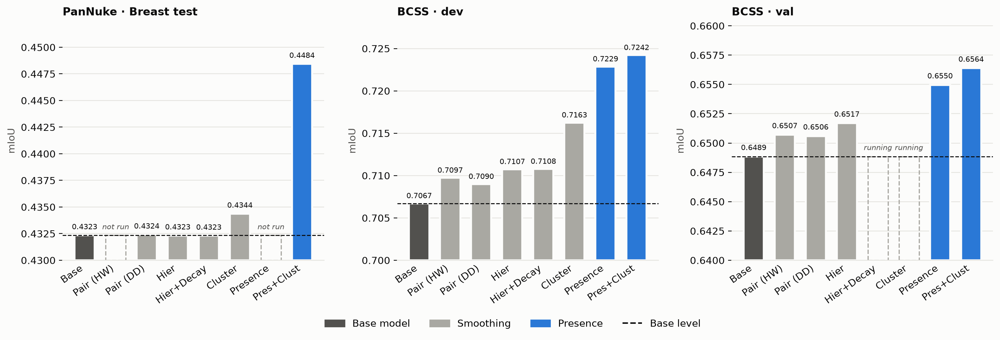
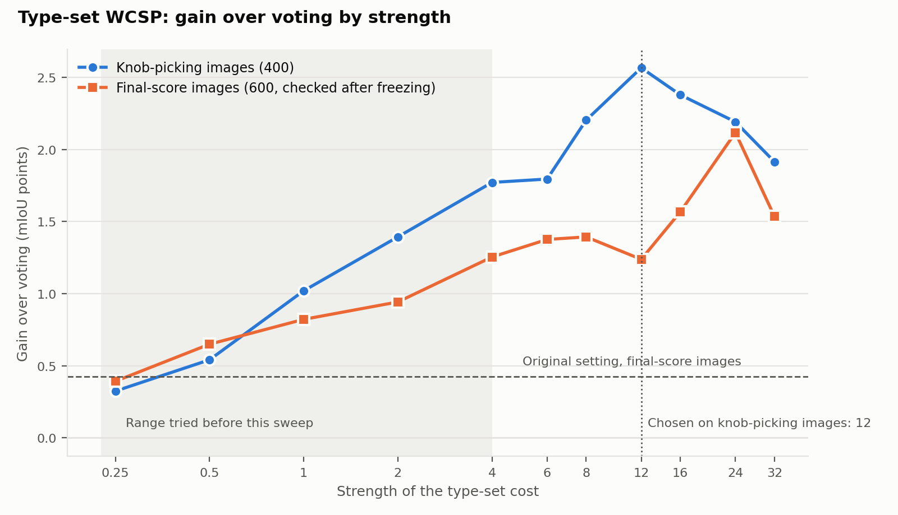
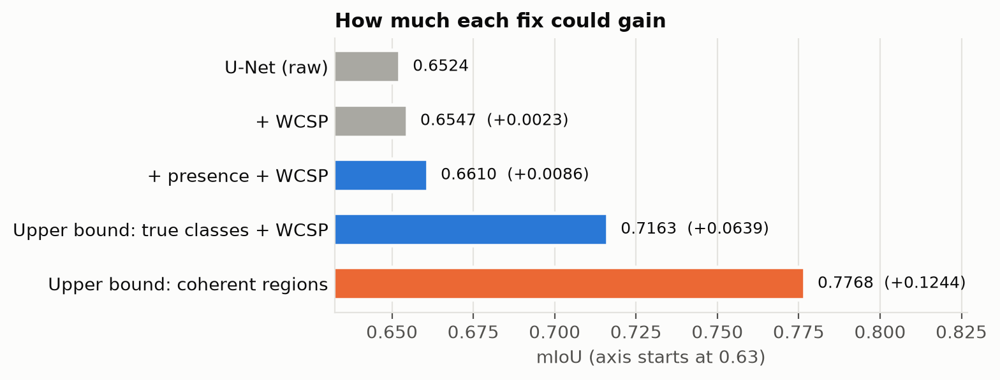
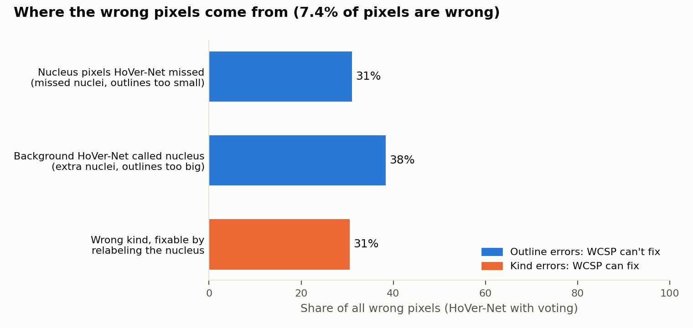

Deliverable 7
November 23, 2026 · PanNuke (cell nuclei) and BCSS (tissue regions)
Recap of results
mIoU, change vs. the base model in brackets. — = not run (yet).
| Method | PanNuke · Breast test | BCSS · dev | BCSS · val |
|---|---|---|---|
| Base | 0.4323 | 0.7067 | 0.6489 |
| Pair (HW) | — | 0.7097 (+0.0030) | 0.6507 (+0.0019) |
| Pair (DD) | 0.4324 (+0.0001) | 0.7090 (+0.0023) | 0.6506 (+0.0018) |
| Hier | 0.4323 (0.0000) | 0.7107 (+0.0040) | 0.6517 (+0.0028) |
| Hier+Decay | 0.4323 (0.0000) | 0.7108 (+0.0041) | running |
| Cluster | 0.4344 (+0.0020) | 0.7163 (+0.0095) | running |
| Presence | — | 0.7229 (+0.0162) | 0.6550 (+0.0061) |
| Pres+Clust | 0.4484 (+0.0161) | 0.7242 (+0.0175) | 0.6564 (+0.0075) |

Sources: PanNuke experiments/pannuke_wcsp/organ_wcsp/breast/evaluation.json (branch organ-wcsp-breast, Nov 22); BCSS run summaries (λ = 8).
PanNuke: per organ, and a wider presence sweep
Every PanNuke WCSP family was refit and retuned on one organ at a time, then scored once on that organ's held-out test patches. Gain = type set (PanNuke's presence rule) minus fixed-mask voting.
| Organ | Test patches | Voting | Presence, tuned for organ | Gain [95% CI] | Works? |
|---|---|---|---|---|---|
| Breast (Kashvi) | 169 | 0.4344 | 0.4484 | +0.0141 [+0.0078, +0.0213] | Yes (Holm p = 0.003) |
| Colon (Aakanksha) | 106 | 0.4267 | 0.4286 | +0.0019 [−0.0013, +0.0055] | No |
| Adrenal gland (Abhishek) | 144 | 0.3404 | 0.3429 | +0.0026 [−0.0052, +0.0111] | No |

The other seven families (pixel table, hierarchy, scaling, decay, nucleus pairwise, type counts, component) move mIoU by less than ±0.004 on every organ, and none is significant. Adrenal uses PanNuke folds 1–3, since fold 2 alone left only 29 test patches.
Wider sweep, like BCSS's presence sweep
1,584 settings of the presence rule: strength up to 32 (previously 4), count per organ or all organs, finer groups by nucleus count, and smoothing. Settings were picked on 400 patches and scored once on 600 fresh patches from PanNuke folds 1 and 3 (all organs except Adrenal).
| Method | mIoU | vs. voting [95% CI] |
|---|---|---|
| HoVer-Net, raw | 0.4337 | |
| HoVer-Net, voting | 0.4326 | — |
| Presence, original setting | 0.4369 | +0.0043 [+0.0020, +0.0072] |
| Presence, swept setting (strength 12, per-organ counts) | 0.4450 | +0.0124 [+0.0021, +0.0233] |

Sources: experiments/pannuke_wcsp/organ_wcsp/README.md (all three organs), organ_wcsp/adrenal_gland/, experiments/pannuke_wcsp/type_set_sweep_20261123/. Colon numbers are from Aakanksha's report of Nov 23.
Hypothesis
The segmenter makes two kinds of mistakes, and smoothing fixes neither.
| Mistake | Example | What would fix it |
|---|---|---|
| Grouping | One stroma region is predicted as ~10 scattered pieces | Coherent regions |
| Labeling | A whole region is called "other" when it's stroma | Knowing which classes belong in the tile |
Preliminary tests
Ryan's full-resolution U-Net · 185 dev tiles · no training.
| Test | Result |
|---|---|
| Wrong pixels that are grouping mistakes | 48% |
| Wrong pixels that are labeling mistakes | 52% |
| Predicted pieces per true region | ~10 (should be 1) |
| Presence + smoothing on this model | 0.6524 → 0.6610 (+0.0086) |
| Upper bound: true classes given per tile | 0.7163 (+0.0639) |
| Upper bound: every true region coherent | 0.7768 (+0.1244) |


PanNuke: the same tests on HoVer-Net
Frozen HoVer-Net · 400 dev patches from PanNuke folds 1 and 3 (all organs except Adrenal) · rules counted on 4,089 separate patches · no training.
On PanNuke, the "grouping" mistake is an outline mistake: a nucleus that is missed, invented, or drawn too big or too small. The "labeling" mistake is a kind mistake: the right nucleus with the wrong cell type.
| Test | Result |
|---|---|
| Wrong pixels that are outline mistakes | 69% |
| Wrong pixels that are kind mistakes | 31% |
| True nuclei HoVer-Net finds | 80% |
| Found nuclei with the right kind (voting → presence) | 80.7% → 82.8% |
| Presence on HoVer-Net (swept setting) | 0.4541 → 0.4797 (+0.0256) |
| Upper bound: true kinds given per patch | 0.5262 (+0.0721) |
| Upper bound: every found nucleus the right kind | 0.6902 (+0.2361) |




Breast examples

Sources: experiments/pannuke_wcsp/prelim_20261123/ (analyze.py, results.json). The rows were chosen by a fixed rule: the 3 largest and 1 smallest per-patch change.
Current experiments: fixing the U-Net itself
Same training as Ryan's model; only the loss changes. Score = raw U-Net, no post-processing.
| Model | Added loss | Fixes | Dev mIoU |
|---|---|---|---|
| A (Ryan) | none | — | 0.6679 |
| B | Region loss: pixels in the same true region should agree | Grouping | — |
| C | Presence loss: predict which classes are in the tile | Labeling | — |